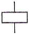
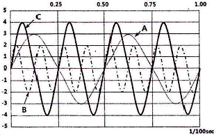
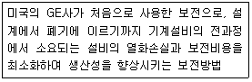

산업안전산업기사 (2012-03-04 기출문제)
1과목: 산업안전관리론
1. 다음 중 위험예지훈련 기초 4라운드(4R)에서 라운드별 내용이 옳게 연결된 것은?
- 1라운드 : 현상파악
- 2라운드 : 대책수립
- 3라운드 : 목표설정
- 4라운드 : 본질추구
(정답률: 93%)

2. 다음 중 주의(attention)의 특징이 아닌 것은?
- 선택성
- 양립성
- 방향성
- 변동성
(정답률: 62%)
3. 산업재해 예방의 4원칙 중 “재해발생은 반드시 원인이 있다.”라는 원칙은 무엇에 해당하는가?
- 대책 선정의 원칙
- 원인 연계의 원칙
- 손실 우연의 원칙
- 예방 가능의 원칙
(정답률: 90%)
4. 레빈(Lewin)은 인간행동과 인간의 조건 및 환경조건의 관계를 B = f (P⋅E)로 표시하였다. 이 때 “f”를 설명한 것으로 옳은 것은?
- 행동
- 조명
- 지능
- 함수
(정답률: 92%)
5. 산업안전보건법상 사업주는 산업재해로 사망자가 발생한 경우 산업재해가 발생한 날부터 얼마 이내에 산업재해조사표를 작성하여 관할 지방고용노동청장에게 제출하여야 하는가?
- 1일
- 7일
- 15일
- 1개월
(정답률: 55%)
6. 어떤 사업장에서 510명 근로자가 1주일에 40시간, 연간50주를 작업하는 중에 21건의 재해가 발생하였다. 이 근로기간 중에 근로자의 4%가 결근하였다면 도수율은 약 얼마인가?
- 0.15
- 21.45
- 22.80
- 41.18
(정답률: 75%)
7. 리더십에 있어서 권한의 역할 중 조직이 지도자에게 부여한 권한이 아닌 것은?
- 보상적 권한
- 강압적 권한
- 합법적 권한
- 전문성의 권한
(정답률: 84%)
8. 안전교육 3단계 중 2단계인 기능교육의 효과를 높이기 위해 가장 바람직한 교육방법은?
- 토의식
- 강의식
- 문답식
- 시범식
(정답률: 75%)
9. 재해의 원인분석법 중 사고의 유형, 기인물 등 분류 항목을 큰 순서대로 도표화하여 문제나 목표의 이해가 편리한 것은?
- 파레토도(pareto diagram)
- 특성요인도(cause-reason diagram)
- 클로즈분석(close analysis)
- 관리도(control chart)
(정답률: 84%)
10. 다음 중 상황성 누발자 재해유발원인과 거리가 먼 것은?
- 작업이 어렵기 때문
- 주의력이 산만하기 때문
- 기계설비에 결함이 있기 때문
- 심신에 근심이 있기 때문
(정답률: 62%)
11. 안전교육의 단계 중 표준작업방법의 습관화를 위한 교육은?
- 태도교육
- 지식교육
- 기능교육
- 기술교육
(정답률: 83%)
12. 산업안전보건법상 사업 내 안전⋅보건교육 중 근로자 정기안전⋅보건교육 내용과 거리가 먼 것은? (단, 산업안전보건법 및 일반관리에 관한 사항은 제외 한다.)
- 산업안전 및 사고 예방에 관한 사항
- 산업보건 및 직업병 예방에 관한 사항
- 유해⋅위험 작업환경 관리에 관한 사항
- 작업공정의 유해⋅위험과 재해 예방대책에 관한 사항
(정답률: 41%)
13. 다음 중 안전보건관리책임자에 대한 설명과 거리가 먼 것은?
- 해당 사업장에서 사업을 실질적으로 총괄관리 하는자이다.
- 해당 사업장에서 안전교육 계획을 수립 및 실시한다.
- 선임사유가 발생한 때에는 지체 없이 선임하고 지정하여야 한다.
- 안전관리자와 보건관리자를 지휘, 감독하는 책임을 가진다.
(정답률: 48%)
14. 다음 중 산업안전보건법상 안전⋅보건 표지에서 기본 모형의 색상이 빨강이 아닌 것은?
- 산화성물질 경고
- 화기금지
- 탑승금지
- 고온 경고
(정답률: 69%)
15. 허즈버그(Herzberg)의 동기⋅위생이론 중에서 위생요인에 해당하지 않는 것은?
- 보수
- 책임감
- 작업조건
- 관리감독
(정답률: 70%)
16. 다음 중 안전교육의 목적과 가장 거리가 먼 것은?
- 설비의 안전화
- 제도의 정착화
- 환경의 안전화
- 행동의 안전화
(정답률: 69%)
17. 다음 중 잠재적인 손실이나 손상을 가져올 수 있는 상태나 조건을 무엇이라 하는가?
- 위험
- 사고
- 상해
- 재해
(정답률: 77%)
18. 다음 중 안전대의 죔줄(로프)의 구비조건이 아닌 것은?
- 내마모성이 낮은 것
- 내열성이 높을 것
- 완충성이 높을 것
- 습기나 약품류에 잘 손상되지 않을 것
(정답률: 79%)
19. 다음 중 산업안전심리의 5요소와 가장 거리가 먼 것은?
- 동기
- 기질
- 감정
- 기능
(정답률: 74%)
20. 산업안전보건법상 아세틸렌 용접장치 또는 가스집합 용접장치를 사용하여 행하는 금속의 용접⋅용단 또는 가열 작업자에게 특별안전⋅보건교육을 시키고자 할 때의 교육 내용으로 거리가 먼 것은?
- 용접흄⋅분진 및 유해광선 등의 유해성에 관한 사항
- 작업방법⋅작업순서 및 응급처치에 관한 사항
- 안전밸브의 취급 및 주의에 관한 사항
- 안전기 및 보호구 취급에 관한 사항
(정답률: 64%)
2과목: 인간공학 및 시스템안전공학
21. 다음 중 시스템 안전분석방법에 대한 설명으로 틀린 것은?
- 해석의 수리적 방법에 따라 정성적, 정량적 방법이 있다.
- 해석의 논리적 방법에 따라 귀납적, 연역적 방법이 있다.
- FTA는 연역적, 정량적 분석이 가능한 방법이다.
- PHA는 운용사고해석이라고 말할 수 있다.
(정답률: 64%)
22. 다음 중 작업대에 관한 설명으로 틀린 것은?
- 경조립 작업은 팔꿈치 높이보다 0 ~ 10cm 정도 낮게 한다.
- 중조립 작업은 팔꿈치 높이보다 10 ~ 20cm 정도 낮게 한다.
- 정밀 작업은 팔꿈치 높이보다 0 ~ 10cm 정도 높게 한다.
- 정밀한 작업이나 장기간 수행하여야 하는 작업은 입식 작업대가 바람직하다.
(정답률: 75%)
23. 다음 중 위험관리의 내용으로 틀린 것은?
- 위험의 파악
- 위험의 처리
- 사고의 발생 확률 예측
- 작업분석
(정답률: 52%)
24. 다음 중 인간-기계 시스템에서 인간과 기계가 병렬로 연결된 작업의 신뢰도는? (단, 인간은 0.8, 기계는 0.98의 신뢰도를 갖고 있다.)
- 0.996
- 0.986
- 0.976
- 0.966
(정답률: 70%)
25. 정보 전달용 표시장치에서 청각적 표현이 좋은 경우가 아닌 것은?
- 메시지가 단순하다.
- 메시지가 복잡하다.
- 메시지가 그 때의 사건을 다룬다.
- 시각장치가 지나치게 많다.
(정답률: 80%)
26. 다음 중 반복되는 사건이 많이 있는 경우에 FTA의 최소 컷셋을 구하는 알고리즘이 아닌 것은?
- Boolean Algorithm
- Monte Carlo Algorithm
- MOCUS Algorithm
- Limnios & Ziani Algorithm
(정답률: 81%)
27. 다음 중 이동전화의 설계에서 사용성 개선을 위해 사용자의 인지적 특성이 가장 많이 고려되어야 하는 사용자 인터페이스 요소는?
- 버튼의 크기
- 전화기의 색깔
- 버튼의 간격
- 한글 입력 방식
(정답률: 70%)
28. 다음 중 운용상의 시스템안전에서 검토 및 분석해야 할 사항으로 틀린 것은?
- 훈련
- 사고조사에의 참여
- ECR(Error Cause Removal) 제안 제도
- 고객에 의한 최종 성능검사
(정답률: 49%)
29. 다음 중 불대수(Boolean algebra)의 관계식으로 옳은 것은?
- A(A⋅B) = B
- A + B = AㆍB
- A + A⋅B = AㆍB
- (A + B)(A + C) = A + BㆍC
(정답률: 77%)
30. 다음 중 인간의 실수(Human Errors)를 감소시킬 수 있는 방법으로 가장 적절하지 않은 것은?
- 직무수행에 필요한 능력과 기량을 가진 사람을 선정함으로써 인간의 실수를 감소시킨다.
- 적절한 교육과 훈련을 통하여 인간의 실수를 감소 시킨다.
- 인간의 과오를 감소시킬 수 있도록 제품이나 시스템을 설계한다.
- 실수를 발생한 사람에게 주의나 경고를 주어 재발생하지 않도록 한다.
(정답률: 74%)
31. 다음 중 일반적인 지침의 설계 요령과 가장 거리가 먼 것은?
- 뾰족한 기침의 선각은 약 30° 정도를 사용한다.
- 지침의 끝은 눈금과 맞닿되 겹치지 않게 한다.
- 원형눈금의 경우 지침의 색은 선단에서 눈의 중심까지 칠한다.
- 시차를 없애기 위해 지침을 눈금 면에 밀착시킨다.
(정답률: 51%)
32. 다음 중 기준의 유형 가운데 체계기준(system criteria)에 해당되지 않는 것은?
- 운용비
- 신뢰도
- 사고빈도
- 사용상의 용이성
(정답률: 35%)
33. 다음 중 완력검사에서 당기는 힘을 측정할 때 가장 큰 힘을 낼 수 있는 팔꿈치의 각도는?
- 90°
- 120°
- 150°
- 180°
(정답률: 57%)
34. 다음은 FT도의 논리 기호 중 어떤 기호인가?

- 결함사상
- 최후사상
- 기본사상
- 통상사상
(정답률: 74%)
35. 다음 중 작업장에서 광원으로부터의 직사휘광을 처리하는 방법으로 옳은 것은?
- 광원의 휘도를 늘인다.
- 광원을 시선에서 가까이 위치시킨다.
- 휘광원 주위를 밝게 하여 광도비를 늘린다.
- 가리개, 차양을 설치한다.
(정답률: 79%)
36. 1/100초 동안 발생한 3개의 음파를 나타낸 것이다. 음의 세기가 가장 큰 것과 가장 높은 음을 순서대로 짝지은 것은?

- A, B
- C, B
- C, A
- B, C
(정답률: 72%)
37. 다음 중 정성적(아날로그)표시장치를 사용하기에 가장 적절하지 않은 것은?
- 전력계와 같이 신속 정확한 값을 알고자 할 때
- 비행기 고도의 변화율을 알고자 할 때
- 자동차 시속을 일정한 수준으로 유지하고자 할 때
- 색이나 형상을 암호화하여 설계 할 때
(정답률: 58%)
38. 다음 중 연속조절 조종장치가 아닌 것은?
- 토글(Toggle)스위치
- 노브(Knob)
- 페달(Pedal)
- 핸들(Handle)
(정답률: 68%)
39. 다음 중 반사형 없이 모든 방향으로 빛을 발하는 점광원에서 2m 떨어진 곳의 조도가 150lux라면 3m 떨어진 곳의 조도는 약 얼마인가?
- 37.5 lux
- 66.67 lux
- 337.5 lux
- 600 lux
(정답률: 71%)
40. 다음 <보기>가 설명하는 것은?

- 생산보전
- 계량보전
- 사후보전
- 예방보전
(정답률: 67%)
3과목: 기계위험방지기술
41. 재료에 구멍이 있거나 노치(notch) 등이 있는 재료에 외력이 작용할 때 가장 현저히 나타나는 현상은?
- 가공경화
- 피로
- 응력집중
- 크리이프(creep)
(정답률: 68%)
42. 전단기 개구부의 가드 간격이 12 mm 일 때 가드와 전단지점간의 거리는?
- 30 mm 이상
- 40 mm 이상
- 50 mm 이상
- 60 mm 이상
(정답률: 53%)
43. 다음 중 드릴작업시 가장 안전한 행동에 해당하는 것은?
- 장갑을 끼고 작업한다.
- 작업 중에 브러시로 칩을 털어 낸다.
- 작은 구멍을 뚫고 큰 구멍을 뚫는다.
- 드릴을 먼저 회전시키고 공작물을 고정한다.
(정답률: 82%)
44. 산업안전보건법상 양중기에서 하중을 직접 지지하는 와이어로프 또는 달기체인의 안전계수로 옳은 것은?
- 1 이상
- 3 이상
- 5 이상
- 7 이상
(정답률: 80%)
45. 프레스의 금형을 부착, 해체 또는 조정 작업시 슬라이드의 불시 하강으로 인해 발생되는 사고를 방지하기 위한 방호장치는?
- 접촉 예방 장치
- 안전블록
- 전환 스위치
- 과부하 방지 장치
(정답률: 85%)
46. 기계의 위험예방을 위한 설명으로 틀린 것은?
- 동력 차단장치는 진동에 의해 갑자기 움직일 우려가 없을 것
- 작업도구는 제조당시의 목적 외로 사용하지 말 것
- 축이 회전하는 기계를 취급시에는 안전을 위해 면장갑을 착용할 것
- 방호장치 결함을 발견시에는 정비 후 사용할 것
(정답률: 87%)
47. 다음 중 산업안전보건법상 컨베이어 작업시작 전 점검 사항이 아닌 것은?
- 원동기 및 풀리 기능의 이상 유무
- 이탈 등의 방지장치 기능의 이상 유무
- 비상정지장치의 이상 유무
- 건널다리의 이상 유무
(정답률: 56%)
48. 아세틸렌 용접장치의 안전기 사용 시 준수사항으로 틀린 것은?
- 수봉식 안전기는 1일 1회 이상 점검하고 항상 지정된 수위를 유지한다.
- 수봉부의 물이 얼었을 때는 더운 물로 용해한다.
- 중압용 안전기의 파열판은 상황에 따라 적어도 연 1회 이상 정기적으로 교환한다.
- 수봉식 안전기는 지면에 대하여 수평으로 설치한다.
(정답률: 68%)
49. 다음 중 컨베이어(conveyor)의 주요 구성품이 아닌 것은?
- 롤러(Roller)
- 벨트(Belt)
- 지브(Jib)
- 체인(Chain)
(정답률: 79%)
50. 기계설비의 회전운동으로 인한 위험을 유발하는 것이 아닌 것은?
- 벨트
- 풀리
- 가드
- 플라이휠
(정답률: 79%)
51. 동력을 사용하여 중량물을 매달아 상하 및 좌우(수평 또는 선회를 말한다.)로 운반하는 것을 목적으로 하는 기계는?
- 크레인
- 리프트
- 곤돌라
- 승강기
(정답률: 76%)
52. 산업용 로봇의 동작 형태별 분류에서 틀린 것은?
- 원통좌표 로봇
- 수평좌표 로봇
- 극좌표 로봇
- 관절 로봇
(정답률: 64%)
53. 목재가공용 기계별 방호장치가 틀린 것은?
- 목재가공용 둥근톱기계 – 반발예방장치
- 동력시 수동대패기계 – 날접촉예방장치
- 목재가공용 띠톱기계 – 날접촉예방장치
- 모떼기 기계 - 반발예방장치
(정답률: 68%)
54. 숫돌축의 회전수 3000rpm인 연삭기에 외측 지름 200mm의 연삭숫돌을 장착하여 운전하면 연삭숫돌의 원주 속도는 약 얼마인가?
- 188.4 m/min
- 1884 m/min
- 314 m/min
- 3140 m/min
(정답률: 67%)
55. 드릴 머신에서 얇은 철판이나 동판에 구멍을 뚫을 때 올바른 작업방법은?
- 테이블에 고정한다.
- 클램프로 고정한다.
- 드릴 바이스에 고정한다.
- 각목을 밑에 깔고 기구로 고정한다.
(정답률: 65%)
56. 산업안전보건법상 회전중인 연삭숫돌 직경이 최소 얼마이상인 경우로서 근로자에게 위험을 미칠 우려가 있는 경우 해당 부위에 덮개를 설치하여야 하는가?
- 3 cm 이상
- 5 cm 이상
- 10 cm 이상
- 20 cm 이상
(정답률: 61%)
57. 프레스 정지시의 안전수칙이 아닌 것은?
- 정전되면 즉시 스위치를 끈다.
- 안전블럭을 바로 고여 준다.
- 클러치를 연결시킨 상태에서 기계를 정지시키지 않는다.
- 플라이휠의 회전을 멈추기 위해 손으로 누르지 않는다.
(정답률: 54%)
58. 페일 세이프(fail safe) 기능의 3단계 중 페일 액티브(fail active)에 관한 내용으로 옳은 것은?
- 부품고장시 기계는 경보를 울리나 짧은 시간내 운전은 가능하다.
- 부품고장시 기계는 정지방향으로 이동한다.
- 부품고장시 추후 보수까지는 안전기능을 유지한다.
- 부품고장시 병렬계통방식이 작동되어 안전기능이 유지된다.
(정답률: 61%)
59. 선반작업에서 가공물의 길이가 외경에 비하여 과도하게 길 때, 절삭저항에 의한 떨림을 방지하기 위한 장치는?
- 센터
- 방진구
- 돌리개
- 심봉
(정답률: 82%)
60. 보일러의 역화(Back Fire) 발생원인이 아닌 것은?
- 압입통풍이 너무 강할 경우
- 댐퍼를 너무 조여 흡입통풍이 부족할 경우
- 연료밸브를 급히 열었을 경우
- 연료에 수분이 함유된 경우
(정답률: 63%)
4과목: 전기 및 화학설비위험방지기술
61. 다음 중 폭발범위에 영향을 주는 인자가 아닌 것은?
- 성상
- 압력
- 공기조성
- 온도
(정답률: 68%)
62. 착화에너지가 0.1mJ 이고 가스를 사용하는 사업장 전기설비의 정전용량이 0.6nF 일 때 방전시 착화 가능한 최소 대전 전위는 약 몇 V 인가?
- 289
- 385
- 577
- 1154
(정답률: 56%)
63. 다음 중 산업안전보건법상 충전전로를 취급하는 경우의 조치사항으로 틀린 것은?
- 고압 및 특별고압의 전로에서 전기작업을 하는 근로자에게 활선작업용 기구 및 장치를 사용하도록 할 것
- 충전전로를 취급하는 근로자에게 그 작업에 적합한 절연용 보호구를 착용시킬 것
- 충전전로를 정전시키는 경우에는 전기작업 전원을 차단한 후 각 단로기 등을 폐로 시킬 것
- 근로자가 절연용 방호구의 설치⋅해체작업을 하는 경우에는 절연용 보호구를 착용하거나 활선작업용 기구 및 장치를 사용하도록 할 것
(정답률: 65%)
64. 다음 중 전류밀도, 통전전류, 접촉면적과 피부저항과의 관계를 설명한 것으로 옳은 것은?
- 같은 크기의 전류가 흘러도 접촉면적이 커지면 피부저항은 작게 된다.
- 같은 크기의 전류가 흘러도 접촉면적이 커지면 전류 밀도는 커진다.
- 전류밀도와 접촉면적은 비례한다.
- 전류밀도와 전류는 반비례한다.
(정답률: 62%)
65. 다음 중 최소발화에너지에 관한 설명으로 틀린 것은?
- 압력이 증가할수록 낮아진다.
- 온도가 높아질수록 낮아진다.
- 공기보다 산소 중에서 더 낮아진다.
- 혼합기체의 흐름이 있으면 유속의 증가에 따라 낮아진다.
(정답률: 52%)
66. 산업안전보건법상 인화성 액체를 수시로 사용하는 밀폐된 공간에서 해당 가스 등으로 폭발위험 분위기가 조성되지 않도록 하기 위해서는 해당 물질의 공기중 농도는 인화 하한계값의 얼마를 넘지 않도록 하여야 하는가?
- 10%
- 15%
- 20%
- 25%
(정답률: 50%)
67. 다음 중 스파크 방전으로 인한 가연성 가스, 증기 등에 폭발을 일으킬 수 있는 조건이 아닌 것은?
- 가연성 물질이 공기와 혼합비를 형성, 가연범위 내에 있다.
- 방전 에너지가 가연 물질의 최소착화에너지 이상이다.
- 방전에 충분한 전위차가 있다.
- 대전 물체는 신뢰성과 안전성이 있다.
(정답률: 68%)
68. 다음 중 분진폭발의 영향인자에 대한 설명으로 틀린 것은?
- 분진의 입경이 작을수록 폭발하기가 쉽다.
- 일반적으로 부유분진이 퇴적분진에 비해 발화 온도가 낮다.
- 연소열이 큰 분진일수록 저농도에서 폭발하고 폭발 위력도 크다.
- 분진의 비표면적이 클수록 폭발성이 높아진다.
(정답률: 45%)
69. 다음 중 화재 및 폭발방지를 위하여 질소가스를 주입하는 불활성화 공정에서 적정 최소산소농도(MOC)는?
- 5%
- 10%
- 21%
- 25%
(정답률: 50%)
70. 다음 중 방폭구조의 종류와 기호가 잘못 연결된 것은?
- 유입방폭구조 - o
- 압력방폭구조 - p
- 내압방폭구조 - d
- 본질안전방폭구조 – e
(정답률: 77%)
71. 금속도체 상호간 혹은 대지에 대하여 전기적으로 절연되어 있는 2개 이상의 금속도체를 전기적으로 접속하여 서로 같은 전위를 형성하여 정전기 사고를 예방하는 기법을 무엇이라 하는가?
- 본딩
- 1종 접지
- 대전 분리
- 특별 접지
(정답률: 71%)
72. 산업안전보건법상 공정안전보고서의 내용 중 공정안전자료에 포함되지 않는 것은?
- 유해⋅위험설비의 목록 및 사양
- 폭발위험장소 구분도 및 전기단선도
- 안전운전지침
- 각종 건물⋅설비의 배치도
(정답률: 59%)
73. 전기누전화재경보기의 설치장소 중 제1종 장소의 경우 연면적으로 옳은 것은?(문제 단위 오류로 전항 정답 처리된 문제입니다. 여기서는 2번을 누르면 정답 처리 됩니다.)
- 200m2 이상
- 300m2 이상
- 500m2 이상
- 1000m2 이상
(정답률: 77%)
74. 산업안전보건법상 충전선로의 선간전압과 접근한 계거리가 틀린 것은?
- 2kV 초과 15kV 이하 → 60cm
- 15kV 초과 37kV 이하 → 80cm
- 37kV 초과 88kV 이하 → 110cm
- 88kV 초과 121kV 이하 → 130cm
(정답률: 63%)
75. 다음 중 발화성 물질에 해당하는 것은?
- 프로판
- 황린
- 염소산 및 그 염류
- 질산에스테르류
(정답률: 50%)
76. 다음 중 전기화재의 직접적인 발생요인과 가장 거리가 먼 것은?
- 누전, 열의 축적
- 피뢰기의 손상
- 지락 및 접속불량으로 인한 과열
- 과전류 및 절연의 손상
(정답률: 78%)
77. 다음 중 산화에틸렌의 분해 폭발 반응에서 생성되는 가스가 아닌 것은? (단, 연소는 일어나지 않는다.)(오류 신고가 접수된 문제입니다. 반드시 정답과 해설을 확인하시기 바랍니다.)
- 메탄(CH4)
- 일산화탄소(CO)
- 에틸렌C2H4)
- 이산화탄소(CO2)
(정답률: 61%)
78. 다음 중 발화도 G1의 발화점의 범위로 옳은 것은?
- 450℃초과
- 300℃초과 450℃ 이하
- 200℃초과 300℃ 이하
- 135℃초과 200℃ 이하
(정답률: 52%)
79. 누전에 의한 감전위험을 방지하기 위하여 감전방지용 누전차단기의 접속에 관한 사항으로 틀린 것은?
- 분기회로마다 누전차단기를 설치한다.
- 작동시간은 0.03초 이내이어야 한다.
- 전기기계⋅기구에 설치되어 있는 누전차단기는 정격 감도전류가 30mA 이하이어야 한다.
- 누전차단기는 배전반 또는 분전반 내에 접속하지 않고 별도로 설치한다.
(정답률: 74%)
80. 다음 중 화재 발생시 주수소화 방법을 적용할 수 있는 물질은?
- 과산화칼륨
- 황산
- 질산
- 과산화수소
(정답률: 50%)
5과목: 건설안전기술
81. 지반개량공법 중 고결안정공법에 해당하지 않는 것은?
- 생석회 말뚝공법
- 동결공법
- 동다짐공법
- 소결공법
(정답률: 47%)
82. 해체용 기계⋅기구의 취급에 대한 설명으로 틀린 것은?
- 해머는 적절한 직경과 종류의 와이어로프로 매달아 사용해야 한다.
- 압쇄기는 셔블(shovel)에 부착설치하여 사용한다.
- 차체에 무리를 초래하는 중량의 압쇄기 부착을 금지한다.
- 해머 사용시 충분한 견인력을 갖춘 도저에 부착하여 사용한다.
(정답률: 41%)
83. 콘크리트 타설 후 물이나 미세한 불순물이 분리 상승하여 콘크리트 표면에 떠오르는 현상을 가리키는 용어와 이때 표면에 발생하는 미세한 물질을 가리키는 용어를 옳게 나열한 것은?
- 블리딩 – 레이턴스
- 보링 – 샌드드레인
- 히빙 – 슬라임
- 블로우홀 – 슬래그
(정답률: 46%)
84. 콘크리트 타설 작업 시 준수사항으로 옳지 않은 것은?
- 바닥위에 흘린 콘크리트는 완전히 청소한다.
- 가능한 높은 곳으로부터 자연 낙하시켜 콘크리트를 타설한다.
- 지나친 진동기 사용은 재료분리를 일으킬 수 있으므로 금해야 한다.
- 최상부의 슬래브는 이어붓기를 되도록 피하고 일시에 전체를 타설하도록 한다.
(정답률: 79%)
85. 주행크레인 및 선회크레인과 건설물 사이에 통로를 설치하는 경우, 그 폭은 최소 얼마 이상으로 하여야 하는가? (단, 건설물의 기둥에 접촉하지 않는 부분인 경우)(오류 신고가 접수된 문제입니다. 반드시 정답과 해설을 확인하시기 바랍니다.)
- 0.3m
- 0.4m
- 0.5m
- 0.6m
(정답률: 47%)
86. 화물취급작업 중 화물 적재 시 준수해야 하는 사항에 속하지 않는 것은?
- 침하의 우려가 없는 튼튼한 기반 위에 적재할 것
- 중량의 화물은 건물의 칸막이나 벽에 기대어 적재 할 것
- 불안정할 정도로 높이 쌓아 올리지 말 것
- 편하중이 생기지 아니하도록 적재할 것
(정답률: 84%)
87. 크레인의 종류에 해당하지 않는 것은?
- 자주식 트럭 크레인
- 크롤러 크레인
- 타워 크레인
- 가이 데릭
(정답률: 76%)
88. 철골공사 중 트랩을 이용해 승강할 때 안전과 관련된 항목이 아닌 것은?
- 수평구명줄
- 수직구명줄
- 안전벨트
- 추락방지대
(정답률: 69%)
89. 작업으로 인하여 물체가 떨어지거나 날아올 위험이 있을 때 위험방지 조치 및 설치 준수사항으로 옳지 않은 것은?
- 수직 보호망 또는 방호 선반 설치
- 낙하물 방지망의 내민길이는 벽면으로부처 2m 이상 유지
- 낙하물 방지망의 수평면과의 각도는 20° 내지 30° 유지
- 낙하물 방지망 설치 높이는 10m 이상마다 설치
(정답률: 47%)
90. 타워크레인을 벽체에 지지하는 경우 서면심사 서류 등이 없거나 명확하지 아니할 때 설치를 위해서는 특정 기술자의 확인을 필요로 하는데, 그 기술자에 해당하지 않는 것은?
- 건설안전기술사
- 기계안전기술사
- 건축시공기술사
- 건설안전분야 산업안전지도사
(정답률: 67%)
91. 철골작업을 실시할 때 작업을 중지하여야 하는 악천후의 기준에 해당하지 않는 것은?
- 풍속이 10m/s 이상인 경우
- 지진이 진도3 이상인 경우
- 강우량이 1mm/h 이상의 경우
- 강설량이 1cm/h 이상의 경우
(정답률: 78%)
92. 슬레이트 지붕위에서 작업을 할 때 산업안전보건법에서 정한 작업 발판의 최소 폭은?
- 20cm 이상
- 30cm 이상
- 40cm 이상
- 50cm 이상
(정답률: 74%)
93. 사다리식 통로의 구조에 대한 설명으로 옳지 않은 것은?
- 견고한 구조로 할 것
- 폭은 20cm 이상의 간격을 유지할 것
- .심한 손상⋅부식 등이 없는 재료를 사용할 것
- 발판과 벽과의 사이는 15cm 이상을 유지할 것
(정답률: 73%)
94. 구조물 해체 작업용 기계기구와 직접적으로 관계가 없는 것은?
- 대형브레이커
- 압쇄기
- 핸드브레이커
- 착암기
(정답률: 64%)
95. 사업주가 높이 1m 이상인 계단의 개방된 측면에 안전난간을 설치하고자 할 때 그 설치기준으로 옳지 않은 것은?
- 난간의 높이는 90cm ~ 120cm가 되도록 할 것
- 난간은 계단참을 포함하여 각층의 계단 전체에 걸쳐서 설치할 것
- 금속제 파이프로 된 난간은 2.7cm 이상의 지름을 갖는 것일 것
- 난간은 임의의 점에 있어서 임의의 방향으로 움직이는 80kg 이하의 하중에 견딜 수 있는 튼튼한 구조일것
(정답률: 79%)
96. 양중기의 와이어로프 등 달기구의 안전계수 기준으로 옳지 않은 것은?
- 크레인의 고리걸이 용구인 와이어로프는 5 이상
- 화물의 하중을 직접 지지하는 달기체인은 4 이상
- 훅, 샤클, 클램프, 리프팅 빔은 3 이상
- 근로자가 탑승하는 운반구를 지지하는 달기체인은 10 이상
(정답률: 74%)
97. 공사용 가설도로의 일반적으로 허용되는 최고 경사도는 얼마인가?
- 5%
- 10%
- 20%
- 30%
(정답률: 48%)
98. 추락에 의한 위험방지 조치사항으로 거리가 먼 것은?
- 투하설비 설치
- 작업발판 설치
- 추락방지망 설치
- 근로자에게 안전대 착용
(정답률: 80%)
99. 가설통로의 설치기준으로 옳지 않은 것은?
- 경사는 30⋅ 이하로 할 것
- 경사가 15⋅를 초과하는 경우에는 미끄러지지 아니하는 구조로 할 것
- 높이 8m 이상인 비계다리에는 8m 이내마다 계단참을 설치 할 것
- 수직갱에 가설된 통로의 길이가 15m 이상인 경우에는 10m 이내마다 계단참을 설치할 것
(정답률: 80%)
100. 연약한 점토층을 굴착하는 경우 흙막이 지보공을 견고히 조립하였음에도 불구하고, 흙막이 바깥에 있는 흙이 안으로 밀려들어 불룩하게 융기되는 형상은?
- 보일링(Boiling)
- 히빙(Heaving)
- 드레인(Drain)
- 펌핑(Pumping)
(정답률: 65%)